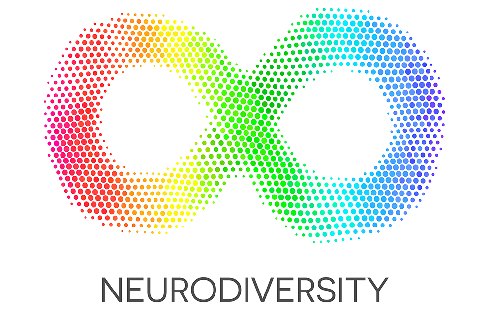

Introduction
Autism is a developmental disorder. Autistic people have atypical development; they may appear to be socially awkward with restricted/repetitive behaviors and disabilities. In society, autistic people need support. Some need high support on daily basis; others need less. But puzzlingly, we have not fully known what autism is and all the forms autism could be (NIH). Then, how can we support all those in need? How can we provide the appropriate support? Could the appropriate support we provide become unknowingly abusive? These are thoughtful concerns—drawn from the point of view of an “outsider.”
Of course, we cannot start from the point of view of an “insider.” Because we only see autism from the lens of symptoms and neuropsychologist descriptions. Because probably we do not share the exact struggles, pain, and fears of being autistic. Do we want to know the “inside” point of view?
As an autistic and a writer, Melanie Yergeau shared her life story in her beautiful book Authoring Autism, On Rhetoric and Neurological Queerness, “When I describe my bodily comportment in terms of symptoms, I reduce how I move through physical space to a mere check box on a patient intake form. My body is more than this reduction… In all of their [neuropsychologist] describing, I find that little about me is described.” Yergeau went on to say that our knowledge about autism is “decidedly non-autistic” (2018). So, autism—what is it?
"[About autism] To whom do we listen? The autistic or the non-autistic? Can there ever really be an in-between?"
—Melanie Yergeau (2018), Authoring Autism, On Rhetoric and Neurological Queerness
“Autism is a very broad spectrum and diagnosis is not precise.”
—Temple Grandin (2013)
In this video below, for the first 4 minutes Dr. Temple Grandin talks about what autism is and the history of diagnosis. She questions if Steve Jobs and Albert Einstein were autistic, and what would had happened to them if they were diagnosed with autism. Would it had been possible for them to develop to their fullest potential? She also points out how shocking it is to see all the inaccurate, incomprehensive, inconsistent updated versions of autism diagnosis.
About Dr. Grandin, she is one of the first individuals to document her insights from her personal experience with autism. She is famously known for her 2013 book The Autistic Brain: Thinking Across The Spectrum.
- A little bit of these traits can provide an advantage. You get too much of these traits, then you get a disadvantage.
- Autism is a very broad spectrum and diagnosis is not precise. It is a behavioral profile.
- The problem is, these [diagnosis] labels are half science, and the other half is doctors squabbling around conference room tables.
Because updated versions of autism diagnosis are inconsistent, it has been controversial what exactly autism is. Which, then, increased awareness of more possible diagnoses and encouraged further international studies (Evans 2017). Under the umbrella of ‘autistic spectrums,’ in 2006, a U.S. study found 66 cases per 10,000 children; a Denmark study found 53.3 per 10,000; and Canada at 64.9. In mid-2000s, an Australian study found around 30; a Chinese study found around 40; while British and North Americans continued to find about 60 cases per 10,000 children. And in 2008, a Japanese study found a rate of 181.1 per 10,000 (Evans 2017). Autistic people have, increasingly, been diagnosed worldwide.
As of April 2020, according to the American Psychiatric Association, autism is defined as ‘Autism Spectrum Disorder,’ which affects 1 in 59 children in the US. Details are shown below:
“I had to go through a lot of stuff to learn how to mask my idiosyncrasies.”
—Sybelle (IRIS, 2018)
Once we look at autistic people as they are on the autism spectrum, it’s easy to see that every autistic individual has own unique behavioral profile.
In this video below, Amy, Kristen, Sybelle, Joan, and Morénike share with us what it’s really like to be on the autism spectrum when society still poorly understands the disorder and fails to provide them appropriate support.
- 0:31—Sybelle: I had to go through a lot of stuff to learn how to mask my idiosyncrasies.
- 0:58—Amy: The words "high functioning" and "low functioning" are used by people who talking about autism from an outside point of view. Rather than saying those words, we tend to say "minimal support needs" and "high support needs."
- 3:40—Morénike: Women are underdiagnosed, black women especially.
- 7:28—Amy: When I was younger, I had no outlet—nobody wanted to hear from me. I felt that I couldn’t be myself, so I turned to writing.
Following the logic that every autistic individual on the spectrum has own unique behavioral profile, could it be that we’re all on a larger spectrum? Could we level up to see that we’re all have different minds and different ways of being—both the autistic and the non-autistic? Here—together, we arrive at neurodiversity. The neurodiversity perspective embraces our neurological differences as part of human diversity—such as racial diversity, sexual and gender diversity, and cultural diversity (Hughes 2016). In short, there is no flaw in our every development—regardless of cultural specificities.

"Everyone has a different mind, a different way of being. Don’t suppress these differences. Accept and support them.”— Vincent Camley (2005)
The population of neurodiversity is made of the neurotypical and the neurodivergent. The neurotypical have their brains function neurologically typical, and the neurodivergent are the rest of the population. The neurotypical are the dominant group—who has coded all socially typical behaviors and critical milestones of development. And, the neurodivergent are of minorities—who have atypical development, who are underrepresented, whose experiences remain largely undocumented. To sum up, in society, the neurodivergent have always been oppressed to forcibly develop like the neurotypical.
It’s important to note, neurodivergence is both difference and disability (Hughes 2016). Looking at autism, autistic people is the neurodivergent. Meaning, autism is not a disease to be cured, it exists because it is a natural variation in our human brain. Therefore, rather than finding causes and cures, society should focus on how best to provide appropriate support.
“Society dismisses Autistics as incompetent, incapable.”
—Lydia Brown (2012)
Every autistic individual is unique on levels of learning, thinking, and problem-solving. Their abilities can be rated from “gifted” to “severely challenged,” according to CDC.
To struggle hard doing the things most people do subconsciously is unfortunate. As Yergeau recalled, “I very clearly remember the long process of being toilet trained… [D]ecoding my body—decoding sensations, recognizing which tightness meant which function, rehearsing the order of bodily motions required to use a toilet—these things long eluded me, and even still do not always remain in the past tense” (2018). Yergeau went on, “Who would choose autism?... Who would choose any disability?” (2018).
Autistic people need appropriate support to live in society. The most common therapy for autistic children is Applied Behavior Analysis (ABA). The principle of ABA is: “Behaviors that are reinforced will increase; behaviors that are not reinforced will reduce and eventually disappear” (Child Mind Institute). To avoid common scenario like “a child who isn’t able to verbalize his wants may become frustrated and self-injure or melt down,” through ABA autistic children will intensively learn needed skills and reduce harmful, self-injurious behaviors (Child Mind Institute).
However, not all ABA therapy are effective and helpful. Some find the therapy works; some say otherwise.
“It is abusive,” wrote C.L. Lynch, an autistic and an award-winning fiction author, in her article Invisible Abuse: ABA and the things only autistic people can see (2019). Lynch and many autistic people who have gone to ABA found their emotional needs ignored. Lynch observed that ABA is too goal-oriented on getting autistic children to behave as desired, the children don’t get to say no. And as the training become more intensive and frequent, the children learn to accept that their “feelings don’t matter and the fastest way to escape the situation is by complying” (Lynch 2019).
Inappropriate support brings about wrong impressions. False support leaves autistic people vulnerable and in time feeling dismissed about their disabilities. So, like always, we better mind how we really make others feel.
“They describe the autistic [as] isolated, withdrawn, antisocial.”
—Melanie Yergeau (2018)
Being isolated, withdrawn, and antisocial are not the characteristics that come with autism. What come with autism are behavioral differences and disabilities. But as autistic people grow up and as society still poorly understand the disorder, we mistreated them. And as a result, they develop the “fear of misunderstanding, gaslighting, blatant, and flagrant ableism” (Brown 2012). Such fear holds them back from thinking that they are part of our community. To simply put, no one is and wants to be isolated, withdrawn, and antisocial—we better not make others become so to us.
Also, Lydia Brown, a Chinese American autistic disability rights activist, writer, and public speaker, shared that autistic people are active citizens and want equal opportunities for everyone (2012)—Just like us. And for the purpose of developing safe networks, Brown advocated autistic culture to be widely known and accessible to all autistic people (2012).
So far, autistic people have now built online many self-created contents, forums, and websites to provide community, support, and resources. For instance, Ask an Autistic is a YouTube series, in which Amythest Schaber shares her insights from being autistic; Autism Women’s Network is a supportive community for autistic women and allies; NeuroClastic is a website provides information about autism spectrum from autistic people; and so many more.
Conclusion
Yet, we have not known the exact causes of autism (NIH) nor the absolute best way to support autistic people develop to their fullest potential. We have come a long way in updating our knowledge about what autism is and ways to support. It is heartening to see that autistic people are opening up to us and want to open up to us. We better kindly help one another.
Could it be that we’re all on the larger spectrum of neurodiversity? Could there be an in-between of the autistic and the non-autistic? Could that be us? Would that mean we have never really been “outsiders” to autism? Hmm, then how are we gonna better the way our society works? Together—Let’s figure out how best to provide appropriate support to those in need.